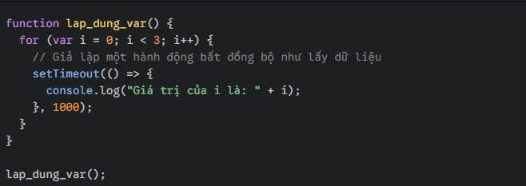
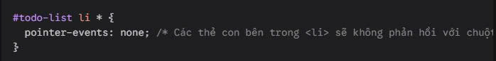

| Thuộc tính | Hệ quy chiếu dịch chuyển để dịch chuyển (top, left, ...) | Ảnh hưởng đến phần tử khác |
|---|---|---|
| position: relative | Chính vị trí ban đầu của nó nếu không có thuộc tính position | Vẫn giữ nguyên khoảng trống ban đầu. Các phần tử khác không nhảy vào chiếm chỗ. |
| position: absolute | Phần tử cha gần nhất có dùng position (thường là relative, absolute, hoặc fixed). Nếu không có, nó sẽ bám theo thẻ body | Bị tách khỏi luồng tài liệu (document flow). Nó như đang "bay" lên một lớp khác, các phần tử dưới đất sẽ nhảy vào chiếm chỗ của nó. |
Để tạo ra một giao diện co giãn tốt trên nhiều thiết bị (Responsive), bộ đôi này thường được dùng kết hợp theo công thức: Cha relative - Con absolute.
Giả sử bạn có một icon giỏ hàng và muốn hiển thị số lượng sản phẩm nhỏ xíu ở góc trên bên phải của icon đó.
Tính Responsive: Dù bạn có thu nhỏ màn hình khiến icon giỏ hàng nhảy đi đâu, cái badge màu đỏ vẫn luôn dính chặt ở góc trên bên phải của icon đó mà không bị lệch ra ngoài.
Khi làm web responsive, bạn muốn một khung chứa video luôn giữ đúng tỷ lệ 16:9 dù màn hình lớn hay nhỏ.
Giải pháp: Bạn dùng position: relative cho khung ngoài với padding top: 56.25% (để tạo tỷ lệ 16:9). Sau đó, dùng position: absolute cho thẻ iframe hoặc img bên trong với width: 100% và height: 100% để nó lấp đầy khung đó.
Thực tế, bản thân thuộc tính CSS không trực tiếp ảnh hưởng đến quá trình deploy (đẩy code lên hosting như Netlify, Vercel, hay server riêng). Tuy nhiên, cách bạn sử dụng chúng ảnh hưởng cực lớn đến hiển thị thực tế của website sau khi deploy trên các thiết bị của người dùng.
+ Lạm dụng absolute gây tràn viền (Overflow): Nếu bạn rải absolute khắp nơi với các thông số fix cứng như left: 500px, khi deploy và mở bằng điện thoại (màn hình rộng chỉ khoảng 375px), phần tử đó sẽ bay thẳng ra ngoài màn hình, tạo ra thanh cuộn ngang cực kỳ khó chịu.
+ Quên không đặt relative cho thẻ cha: Đây là lỗi kinh điển. Ở máy bạn (màn hình lớn), bạn thấy phần tử absolute nằm khá chuẩn. Nhưng khi deploy, người dùng mở trên iPad, do không có cha làm mốc, nó sẽ bám vào thẻ body và bay lung tung không kiểm soát được.
+ Gối đầu lên nhau (Z-index conflict): Khi dùng absolute, các phần tử rất dễ đè lên chữ hoặc menu khác. Bạn cần kiểm tra kỹ thuộc tính z-index trên cả giao diện mobile và desktop sau khi deploy.
Domain là địa chỉ của website (ví dụ: example.com) giúp người dùng dễ dàng truy cập. Người dùng đăng ký domain thông qua các nhà cung cấp như:
+ GoDaddy
+ Namecheap
==> Sau khi đăng ký, bạn sẽ sở hữu quyền sử dụng tên miền trong một khoảng thời gian nhất định.
Hosting là nơi lưu trữ mã nguồn website (HTML, CSS, JavaScript). Đối với website đơn giản (frontend JavaScript), có thể dùng:
+ Hosting miễn phí (static hosting)
+ Không cần server backend
Upload các file: index.html / style.css / script.js
Thông qua: FTP (FileZilla) / Hoặc push code lên Git
Truy cập quản lý domain
Cấu hình: A record → trỏ đến địa chỉ IP của server Hoặc CNAME → trỏ đến domain của hosting
DNS (Domain Name System) là hệ thống phân giải tên miền thành địa chỉ IP.
Ví dụ: example.com → 192.168.1.1
Vai trò chính:
+ Giúp trình duyệt tìm đúng server chứa website
+ Kết nối giữa domain và hosting
+ Nếu DNS sai → website không truy cập được
GitHub Pages:
+ Deploy trực tiếp từ repository GitHub
+ Hỗ trợ HTTPS miễn phí
+ Phù hợp cho sinh viên, project nhỏ
Netlify
+ Kéo thả project để deploy
+ Tự động build và cập nhật khi push code
+ Có CDN giúp tăng tốc website
👉 Ưu điểm chung: Không cần server riêng / Dễ sử dụng / Triển khai nhanh chóng
Không sử dụng HTTPS: Dữ liệu truyền không được mã hóa, dễ bị đánh cắp thông tin (man-in-the-middle)
Lộ thông tin nhạy cảm: để lộ API key trong file JavaScript, upload nhầm file .env, config
Cấu hình DNS sai: Website không truy cập được, có thể bị chiếm quyền domain (DNS hijacking)
Rủi ro: không có HTTPS, lộ API key, cấu hình sai DNS.
CORS và bảo mật trình duyệt: nếu không cấu hình đúng có thể bị tấn công từ domain khác, gây lỗi khi gọi API
Không kiểm soát truy cập:Ai cũng có thể truy cập file nhạy cảm nếu không cấu hình đúng quyền
| Tiêu chí | var | let | const |
|---|---|---|---|
| Scope | Function scope: Chỉ bị giới hạn bên trong một hàm. | Block scope: Bị giới hạn bên trong cặp ngoặc nhọn {...} (như if, for). | Block scope: Tương tự let. |
| Hoisting | Có. Khởi tạo bằng undefined. Bạn có thể gọi trước khi khai báo mà không lỗi. | Có, nhưng nằm trong vùng TDZ. Không thể truy cập trước khi dòng khai báo chạy. | Có, nhưng nằm trong vùng TDZ. Không thể truy cập trước khi dòng khai báo chạy. |
| Gán lại giá trị | Thoải mái. | Thoải mái. | Không thể. (Báo lỗi TypeError). |
- Lỗi này hay xảy ra khi lập trình viên dùng var trong vòng lặp và vô tình làm biến "rò rỉ" ra ngoài, hoặc gặp lỗi bất đồng bộ.

+ Kết quả mong muốn: In ra 0, 1, 2.
+ Kết quả thực tế: In ra 3, 3, 3.
+ Tại sao? Vì var có function scope, nên cả 3 hàm setTimeout đều tham chiếu chung tới một biến i duy nhất nằm ngoài vòng lặp. Khi 1 giây trôi qua và hàm chạy, vòng lặp đã kết thúc và i đã bằng 3.
==>Cách sửa nhanh: Chỉ cần đổi var i = 0 thành let i = 0. Nhờ block scope, mỗi vòng lặp let sẽ tạo ra một biến i độc lập nằm trong phạm vi ngoặc nhọn đó.
- Khi code không chạy như ý, cách tệ nhất là ngồi đoán mò hay console.log bừa bãi. Hãy dùng Sources Tab trong Chrome DevTools để "soi" từng dòng code đang chạy.
Các bước thực hiện:
Bước 1: Mở trang web của bạn trên Chrome, nhấn phím F12 (hoặc Ctrl + Shift + I trên Windows / Cmd + Option + I trên Mac) để mở DevTools.
Bước 2: Chuyển sang tab Sources. Ở cây thư mục bên trái, tìm và mở file JavaScript của bạn
Bước 3 (Đặt Breakpoint): Click vào số dòng code bạn muốn tạm dừng (ví dụ: dòng có lệnh setTimeout hoặc dòng khai báo biến). Bạn sẽ thấy một dấu chấm xanh dương xuất hiện ở số dòng.
Bước 4: Tải lại trang (Ctrl + R). Trình duyệt sẽ chạy code và khựng lại ngay đúng dòng bạn đánh dấu
- Đọc bảng "Scope" ở cột bên phải:
Khi code đang tạm dừng, bạn nhìn sang thanh công cụ bên phải và cuộn xuống mục Scope. Đây chính là "mỏ vàng" để debug:
+ Nếu bạn dùng var, bạn sẽ thấy biến đó nằm trong mục Global hoặc Local (nếu ở trong hàm).
+ Nếu bạn dùng let hoặc const, bạn sẽ thấy một mục mới xuất hiện tên là Block. Bạn có thể thấy rõ giá trị của biến đó ở lượt lặp hiện tại là bao nhiêu.
+ Nếu bạn đang đứng trước dòng khai báo let mà muốn xem giá trị của nó, DevTools sẽ báo lỗi chưa khởi tạo, chứng minh nó đang nằm trong TDZ.
Nhờ việc soi trực tiếp vào các ô nhớ này trong Scope, bạn sẽ biết chính xác tại sao biến của mình lại mang một giá trị "trên trời dưới đất" nào đó.
- Event Delegation (Ủy quyền sự kiện) là một kỹ thuật cực kỳ thông minh và phổ biến trong JavaScript. Thay vì gắn bộ lắng nghe sự kiện (Event Listener) cho từng phần tử con riêng lẻ, bạn chỉ gắn duy nhất một bộ lắng nghe sự kiện vào phần tử cha của chúng.
- Kỹ thuật này hoạt động dựa trên cơ chế Event Bubbling (Sự kiện nổi bọt) trong JavaScript: Khi một sự kiện xảy ra trên một phần tử, nó không dừng lại ở đó mà sẽ "nổi bọt" dần lên các phần tử tổ tiên bao bọc nó.
Hãy tưởng tượng bạn đang làm một ứng dụng To-Do List. Người dùng có thể liên tục thêm các công việc mới vào danh sách. Bạn muốn khi click vào bất kỳ việc nào, việc đó sẽ được đánh dấu là hoàn thành (gạch ngang chữ). Nếu không dùng Event Delegation, mỗi lần thêm một "li" mới, bạn lại phải dùng JavaScript để gắn addEventListener cho nó. Rất cồng kềnh!
Cách xử lý tối ưu:
Code HTML

Code JavaScript

Kỹ thuật Event Delegation không chỉ dừng lại ở việc code gọn gàng hơn, mà nó mang lại lợi ích khổng lồ cho hiệu suất (Performance) của website khi kết hợp nhịp nhàng với HTML và CSS.
🚀 Tiết kiệm bộ nhớ (Memory) vượt trội
+ Nếu danh sách của bạn có $1000$ mục, cách làm thông thường sẽ tiêu tốn $1000$ vùng nhớ.
+ Dùng Event Delegation, bạn chỉ tốn đúng $1$ vùng nhớ cho thẻ cha. Điều này giúp giảm tải cho CPU và RAM của thiết bị người dùng một cách đáng kể, đặc biệt là trên các thiết bị di động cấu hình yếu.
🎨Giảm thiểu hiện tượng "Reflow" và "Repaint" của CSS
+ Khi bạn thêm một phần tử mới vào DOM và gắn listener cho nó, trình duyệt thường phải tính toán lại bố cục (Reflow) và vẽ lại giao diện (Repaint). Bằng cách dồn toàn bộ logic xử lý sự kiện về cho thẻ cha và sử dụng CSS class để thay đổi trạng thái (như ví dụ .completed ở trên), bạn đang giúp trình duyệt tối ưu hóa việc render.
🛠️ Đơn giản hóa việc quản lý DOM
+ Khi phần tử con bị xóa bỏ khỏi danh sách, nếu bạn dùng cách cũ, bạn nên gỡ bỏ listener của nó để tránh rò rỉ bộ nhớ (memory leak). Với Event Delegation, vì listener nằm ở thẻ cha (vẫn luôn tồn tại), bạn có thể thoải mái xóa/thêm các phần tử con mà không lo lắng về việc dọn dẹp bộ nhớ thừa.
Đôi khi trong thẻ li của bạn có chứa các thẻ con nhỏ hơn như span hoặc i (icon). Khi người dùng click trúng cái icon, event.target lúc này sẽ trả về thẻ i chứ không phải li, khiến code check nodeName 'LI' của bạn bị sai.
Để xử lý việc này cực mượt mà bằng CSS mà không cần viết thêm JS phức tạp, bạn chỉ cần thêm thuộc tính này vào CSS:

Lúc này, dù người dùng có click vào icon bên trong, trình duyệt vẫn hiểu là họ đang click vào thẻ li. Một sự kết hợp hoàn hảo giữa CSS và JS!